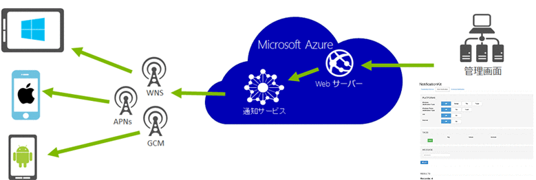
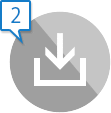

あなたがスマートフォン向けに開発したアプリはユーザーにちゃんと利用されていますか?
アプリにプッシュ通知を組み込むことでユーザーとアプリを強力に結び付けます。
ユーザーの利用継続率向上につながる告知をタイムリーに届けることができます。
-
継続的に無償利用
独自にプッシュ通知を開発するには多くの実装やインフラストラクチャの構成が必要です。
このキットと Microsoft Azure を組み合わせること無料で手軽にプッシュ通知をアプリに組み込むことができます。
-
容易に導入
サーバー サイドのロジックは不要です。
また iOS、Android、Windows、Windows Phone 向けに SDK が提供されているため簡単に導入できます。 -
タグによるターゲティング配信
任意の属性をもつユーザーだけに通知を配信できます。アプリの最終起動日時やユーザーの性別、年齢など組み合わせた条件を設定できます。
- たとえば
-
- サッカーに興味がある iOS ユーザーだけに配信
- 東京在住の女性だけに広告を配信
-
分析ツール
プラットフォーム毎に送信数や送信エラー数などの詳細なレポートが閲覧できます。
-
スケジュール配信
指定した日や時間に配信予約することができます。料金の詳細は Web ページをご確認ください。
http://azure.microsoft.com/ja-jp/pricing/details/notification-hubs/
キットの利用手順
-
Microsoft Azure のアカウントをお持ちでない場合は作成してください。
※ キットは評価期間だけでなく継続して無料で使えます -

プッシュ通知スターター キット
これさえあれば、サーバー側の実装なしでプッシュ通知を実装できます。
Step-by-step ガイド付き。(11 月公開予定) -
プッシュ通知スターターキットを動画で理解する。(近日公開予定)